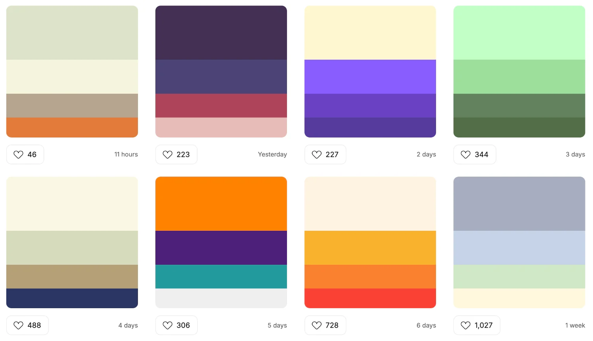

Aqui presentare las sugerencias que considero para mejorar la Pagina de Kinal
Primero diria que es importante cambiar los colores de la pagina, se sabe que los colores usados son los que representan a la fundacion por asi decirlo
pero estaria bien cambiarlos a colores que combienen entre si. Aqui dejo unos ejemplos:

Segundo diria que es importante cambiar los colores de la pagina, se sabe que los colores usados son los que representan a la fundacion por asi decirlo
pero estaria bien cambiarlos a colores que combienen entre si. Aqui dejo unos ejemplos:
Tercero diria que es importante cambiar los colores de la pagina, se sabe que los colores usados son los que representan a la fundacion por asi decirlo
pero estaria bien cambiarlos a colores que combienen entre si. Aqui dejo unos ejemplos: